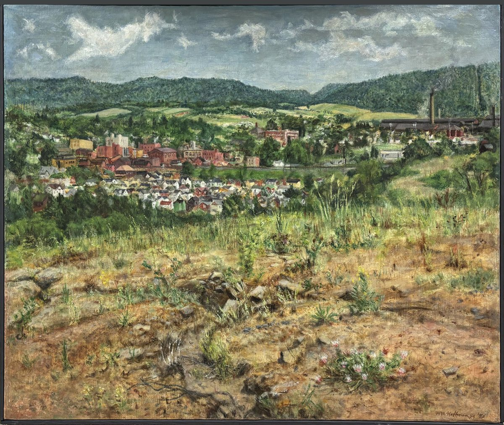

Built for phones
Right now the desktop page just shrinks on a phone and gets hard to read. Most visitors checking shows and classes are on mobile, so the homepage should be built for that first.
Exhibitions through fall 2026 and a full summer class schedule deserve a homepage that opens fast and reads cleanly on a phone. This is a private direction page, not a public redesign.
What we would clean up
Right now the desktop page just shrinks on a phone and gets hard to read. Most visitors checking shows and classes are on mobile, so the homepage should be built for that first.
A clear Register for a class button near the top turns a schedule into actual sign-ups instead of a phone call or an email.
A 6 to 9 second load loses people before the page even appears. A flat, lightweight build opens in about a second.
This preview starts from your real exhibitions, class schedule, and the actual issues on the current site, not a stock layout.
The full version turns this direction into a real mobile-first site on the domain you already own, flat $1,500, about two weeks.